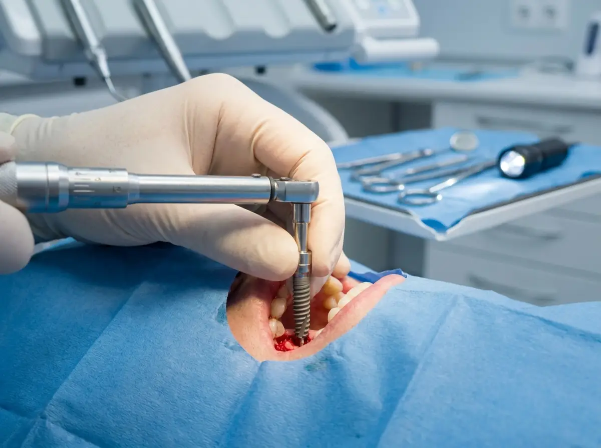
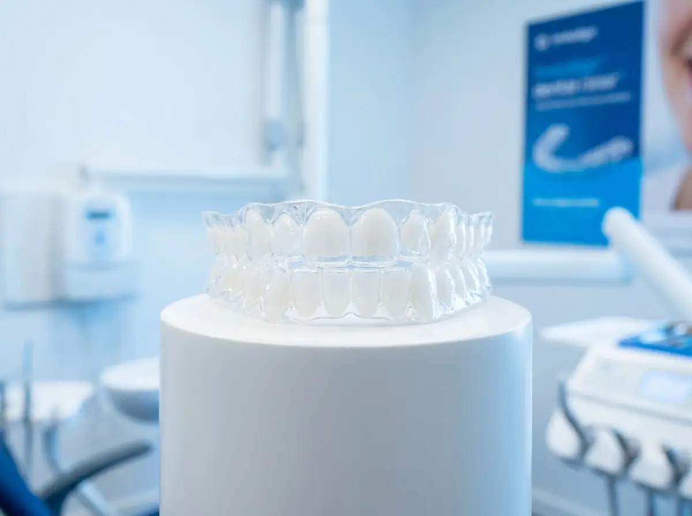
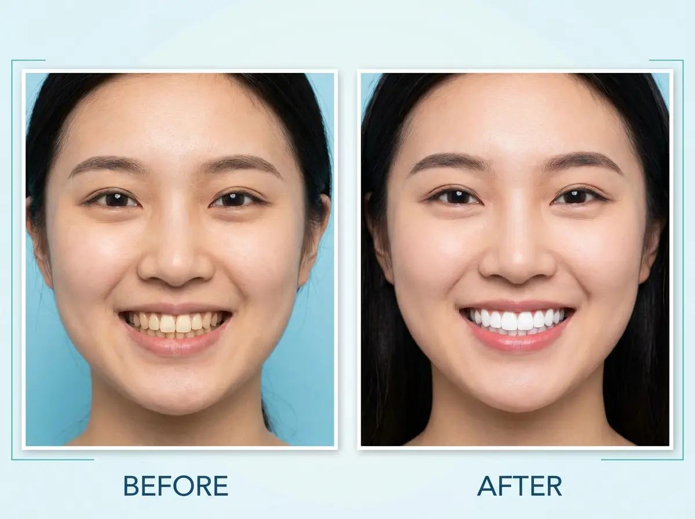

從預防保健到複雜手術，禾睿牙醫提供一站式照護，守護您全家的口腔健康。

找回自然咬合力，重拾生活品質
採用德國 Straumann 植牙系統，全球頂尖品牌保證品質
術前 3D 電腦斷層掃描，精準評估骨量與神經位置
微創手術技術，術後腫脹疼痛大幅降低
瑞士 Straumann 植體，ITI 全球認證，15年以上成功率超過 95%
骨整合完成後裝設全瓷冠，美觀自然，不影響鄰牙
單顆植牙、全口植牙、All on 4/6 皆可規劃
完整術後追蹤，定期回診確保植體健康

打造整齊美觀的笑容，改善咬合功能
幾乎隱形，舒適方便，隨時可取下
美國 Align Technology 認證醫師操作，精準數位規劃
透明牙套每兩週更換一副，逐步矯正牙齒
進食時可取下，不影響飲食，也較易清潔
適合輕度至中度齒列不整，各年齡層皆適用
最成熟的矯正技術，適合複雜齒列
適應症最廣泛，可處理複雜齒列問題
金屬或陶瓷托槽可選，陶瓷款顏色較接近齒色
矯正力道可精準控制，適合骨性問題患者
費用相對透明矯正較低，性價比高

安全有效的專業美白，還原您的自信笑容
約 60–90 分鐘即完成，當場見效。使用冷光活化美白劑，安全不傷琺瑯質。適合婚禮前、重要場合前的快速美白需求。費用約 NT$ 8,000–15,000。
醫師為您量身訂製牙托，搭配專業美白凝膠在家使用，2–4 週達到最佳效果。適合牙齒敏感者，效果溫和持久。費用約 NT$ 5,000–8,000。
結合診間冷光美白與居家套組的雙效方案，美白效果最佳且持久，推薦給對美白效果有高度要求的患者。費用約 NT$ 15,000–22,000。
從小建立口腔保健習慣，守護孩子一生的健康
乳牙蛀牙填補、根管治療、不鏽鋼冠，保留乳牙直到自然換牙時間。
定期塗氟強化琺瑯質，窩溝封填預防蛀牙，是最有效的預防措施。
以遊戲化方式教導孩子正確刷牙方式，讓孩子愛上口腔保健。
牙床健康是所有牙科治療的基礎
使用超音波洗牙機徹底清除牙菌斑與牙結石，建議每半年洗牙一次，可健保給付（每半年一次）。
針對中重度牙周病患者，深入牙齦下方清除頑固牙結石，促進牙周組織再生。需局部麻醉，通常分 4 個區塊進行。
對深牙周囊袋或牙骨缺損患者進行翻瓣手術，直視清創並配合骨移植或再生膜，恢復牙周組織健康。
預防勝於治療，定期檢查是口腔健康的第一步
建議每半年進行口腔全面檢查，早期發現問題，避免惡化。
數位化低輻射 X 光，精確診斷肉眼看不到的蛀牙、骨缺損問題。
醫師依您的口腔狀況給予個人化的居家保健建議與刷牙指導。